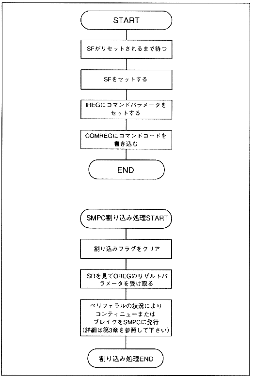

Return to previous page
｜
Return to menu
｜
Go to next page
Figure 2.4 Class D command flow

Note) Masking SMPC interrupt (without using SMPC interrupt) and polling SMPC interrupt flag and SF
clear after issuing command
processing similar to SMPC interrupt routine Can be executed.
Return to previous page
｜
Return to menu
｜
Go to next page